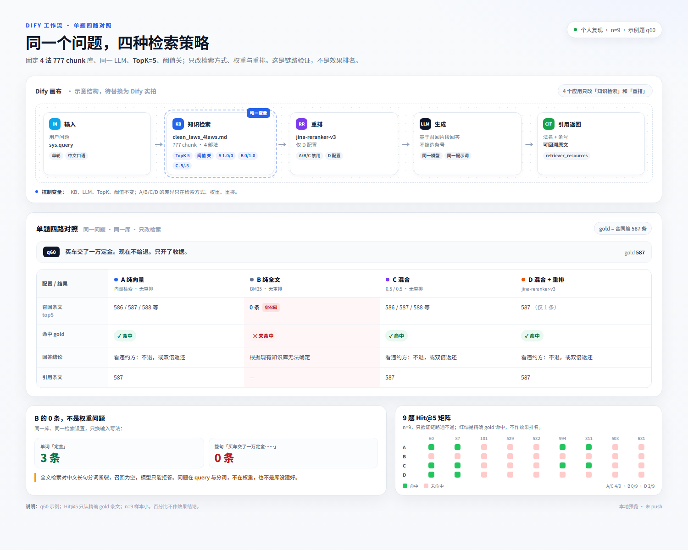

法律 RAG：法条切分与检索评测
Dify 演示
同一个问题，四种检索策略 · 点图看交互稿
在线试用（D：混合 + 重排）：udify.app/chat/3AGX2LHJoFKNQdE8 · 看大图或交互稿：dify_effect_mock.html
知识库搭建
数据源 / 切分 / Embedding / 检索，四个要自己拍板的决策法律文本的 6 个特性
决定了它不能按 512 字切权威性 / 精确措辞
“应当”是强制，“可以”是授权；差一个词结论就变。切分不能改写原文，引用必须精确到条号。
时效性 / 版本
法规会修订、废止、被新法取代。元数据要带 status 和生效日期，检索前过滤，不靠模型判断。
强结构 / 坐标
编 → 章 → 节 → 条 → 款 → 项；引用是“某法第 X 条第 X 款”，天然适合按条切分。
长文本 / 跨法条
一个劳动问题要同时看劳动合同法、司法解释、实施条例；单条召回不够，需要多路召回和父子分段。
术语密集 / 坐标查询
“劳动合同法第三十九条”这类查询靠字面命中；纯向量对编号不敏感，BM25 不能省。
高风险 / 可追溯
用户要“依据”不是“总结”。材料编号、引用格式、拒答、免责声明、评测闭环，一个都不能少。
切分：固定长度 → 结构切分 → 父子分段
切完还能拼回去，才算切对固定长度
1000 字 + 200 重叠，中文标点优先。简单、通用，但会从法条中间切开，丢掉“第 X 条”坐标。
基线
结构切分
以“条”为单位，章/节路径、条号、款/项一起入库；超长条再按款拆，但保留完整坐标。
法条主方案
父子分段
子块（款/项）负责和 query 精确匹配；父块（整条）负责给模型完整上下文；引用回到条号。
长条文增强
子块 · 检索
第二十一条 第 2 款
“在试用期中，除劳动者有本法第三十九条和第四十条第一项、第二项规定的情形外，用人单位不得解除劳动合同。”
和 query 精确匹配，负责“找得到”→命中子块
回溯父块
回溯父块
父块 · 生成
第二十一条 整条
引导句 + 全部款项，模型读到的是完整法律命题，而不是半截条文。
引用回“第二十一条”，负责“说得清”
一句话：父子分段不是“再切一刀”，而是“检索用子块、生成用父块、引用回条号”。
主文还有一个更狠的说法：长条拆成均衡子块去重排，重排后按父级结构合并回引用单位——排序对象和展示对象分离。
检索：BM25 为什么不能省
法律里有一半是坐标型查询01双路召回BM25 管条号/术语；向量管同义改写
02RRF 融合1/(k+rank)，k=60；只看排名，不看分数量纲
03重排交叉编码器逐对打分，把正确条文从第 7 提到第 2
04Top 3–6编号 + 来源头进 prompt，太多会稀释注意力
| 查询类型 | 例子 | 主力 | 辅助 |
|---|---|---|---|
| 语义型 | 没签合同被开除怎么维权 | 向量 | BM25 |
| 坐标型 | 劳动合同法第三十九条说了什么 | BM25 | 元数据（法规名） |
| 术语型 | 竞业限制期限是几年 | BM25 | 向量 |
| 多跳型 | 违法辞退能拿多少赔偿 | 向量 + BM25 | 重排、多轮压缩 |
为什么不是“向量 or BM25”：纯向量 63%，纯 BM25 71%，融合 78%。
坐标型查询靠 BM25，语义型查询靠向量；RRF 把两路排名合并，重排再做最后一道精排。
评测口径
把分母写清楚，比数字本身更加分| 指标 | 定义 | 状态 |
|---|---|---|
| 答案级引用命中率 | 回答引用的条文里至少一条命中 gold 条文；分母=有引用的回答 | 团队 n≈300：63→71→78→85 |
| 引用准确率 | 回答里的法规名 + 条号与原文一致的比例 | 团队评测：80→93 |
| Hit@5 | Top 5 里至少一条命中 gold 条文；分母=全部题（含拒答题） | 个人复现 9 题：A 4/9、B 0/9、C 4/9、D 2/9 |
| Recall@5 | Top 5 命中的 gold 条数 / 该题 gold 总条数，再对题取平均 | A/C 0.389；B 0；D 0.222 |
| MRR@5 | 第一条命中 gold 的排名的倒数（1/rank），未命中记 0，再对题取平均 | A/C 0.356；B 0；D 0.222 |
| 拒答率 | 知识库没有依据时，明确说“不确定”的比例 | 待补 |
| P95 延迟 | 端到端响应时间，比平均值更能反映体验 | 待补 |